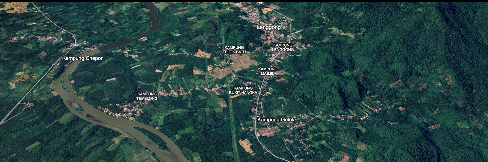

Bahasa · Sejarah · Warisan
Lembah
Lenggong
Jejak Bahasa, Sejarah dan Warisan
Menelusuri kata, merakam ingatan, dan mengenali Lenggong melalui bahasa serta cerita setempat.
Terokai catatan ↗Lihat peta penuh ↗Imej asas: Google Earth · Disunting dengan AI
Kenali Lenggong
Sebuah tempat.
Pelbagai cerita.
Ruang untuk catatan bahasa, sejarah tempatan dan warisan, dihimpunkan sedikit demi sedikit.
Ruang bacaan
Catatan dari Lenggong
Artikel bahasa, sejarah dan warisan berdasarkan bahan yang dikumpulkan untuk projek ini.
Kata & makna
Koleksi Kata
Ruang rujukan perkataan Lenggong, dengan makna Bahasa Melayu standard, contoh penggunaan dan nota sebutan apabila tersedia.
Tentang projek
Mencatat hari ini.
Untuk rujukan esok.
Lembah Lenggong ialah ruang penerbitan untuk berkongsi dapatan tentang bahasa, sejarah dan warisan tempatan. Bahan akan ditambah secara berperingkat, termasuk artikel yang disediakan daripada rakaman temu bual.